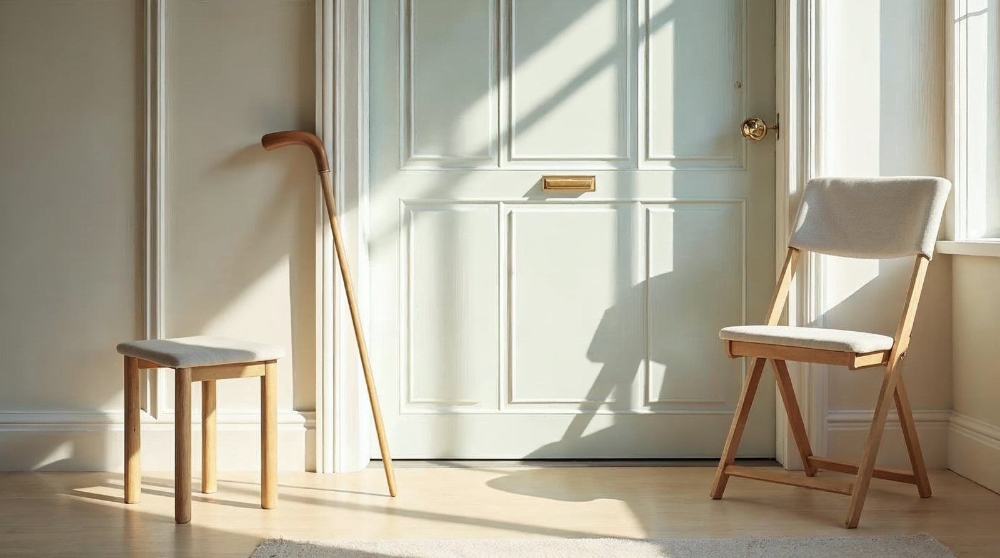
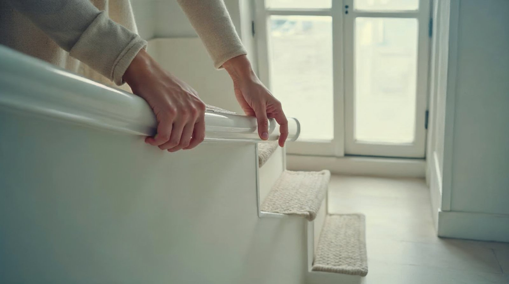
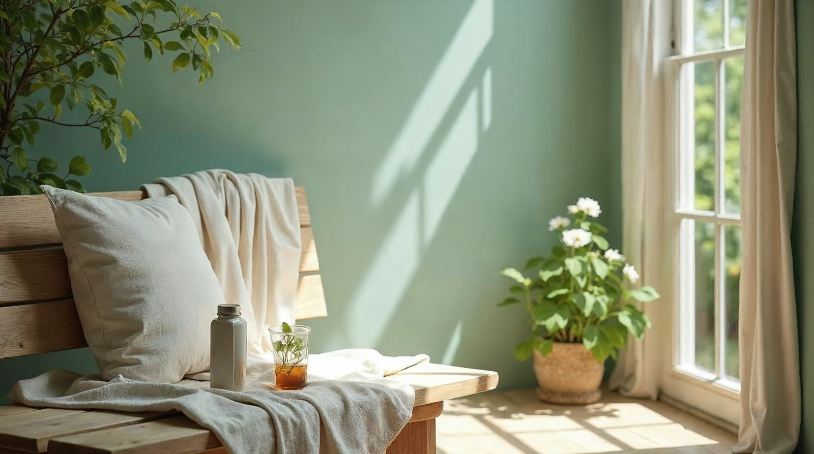
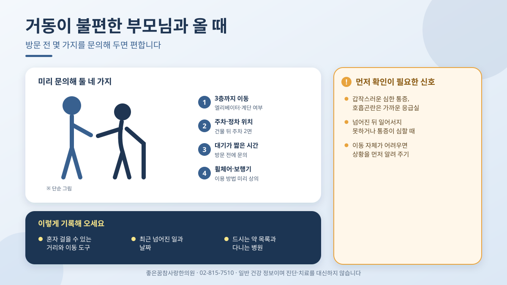

이종호 한의사 감수좋은꿈참사랑한의원 대표원장 (한의사 면허번호 19769)발행 2026-11-23 · 수정 2026-11-26
이 글의 차례
거동이 불편한 부모님을 모시고 오신다면 출발 전에 전화(02-815-7510) 한 통으로 세 가지를 확인해 두세요. 3층·5층 가운데 어느 층으로 오시면 되는지, 차로 오실 때 주차하거나 가까이 정차할 곳, 휠체어나 보행기를 쓰실 때 이용할 수 있는 방법입니다.
한의원은 서울 동작구 만양로2길 2 신성빌딩 3층·5층에 있고, 건물에 엘리베이터가 있습니다. 이동이 편해야 진료실에서도 긴장을 덜고 이야기하실 수 있습니다.
비 예보가 있는 아침, 부모님 댁 현관에서 지팡이를 챙기고 신발을 신겨 드리다 보면 벌써 기운이 빠집니다. 택시를 부를지, 차를 가져갈지, 내린 곳에서 몇 걸음이나 걸으셔야 할지. 병원 한 번 다녀오는 일이 하루치 계획이 됩니다.
그 수고를 압니다. 그리고 그렇게 나서는 길이 부모님께도 작은 용기라는 것도 압니다. 한 달만 집에 가만히 계셔도 밖에 나오기가 점점 귀찮아지고, 그 마음이 들면 몸은 더 약해지기 쉽거든요.
왜 미리 확인하면 좋을까요
집에서 한의원까지 오는 길에 오르막이나 계단이 있으면 같은 거리도 훨씬 길게 느껴집니다. 정류장이나 차에서 내린 곳에서 건물 입구까지 몇 걸음인지도 부모님께는 큰 차이입니다.
겨울에는 미끄러운 길과 추위 때문에 같은 거리도 더 힘듭니다. 저는 어르신들께 비 오는 날과 눈 오는 날에는 무리해서 나서지 마시라고 말씀드립니다.
대기 시간이 길면 앉아 계시는 것만으로도 부담이 될 수 있습니다. 지팡이, 보행기, 휠체어처럼 쓰시는 도구에 따라 필요한 준비도 달라집니다. 출발 전 전화 한 통이 그날의 고단함을 많이 덜어 줍니다.
어르신 세 분 가운데 한 분꼴로 한 해에 한 번은 넘어진다고 알려져 있습니다. 나이가 들면 뼈가 약해지기 쉬워 같은 힘으로 부딪혀도 더 크게 다칠 수 있지요. 오가는 길을 미리 살피는 일이 번거로워 보여도 그만한 까닭이 있습니다.
걸음이 불안한 데는 이유가 하나가 아닙니다. 다리 힘이 줄었을 수도, 균형 감각이 떨어졌을 수도 있습니다. 눈이 불편하시거나, 드시는 약이 여러 가지라 졸림과 어지럼이 겹쳤을 수도 있지요. 오시는 날 무엇을 조심할지도 그 이유에 따라 달라집니다.
먼저 이렇게 여쭙니다
- 집 안과 바깥에서 혼자 걸을 수 있는 거리는 어느 정도인가요?
- 지팡이, 보행기, 휠체어 중 어떤 도구를 쓰시나요?
- 최근 넘어지신 일이 있나요?
- 가장 불편해하시는 곳은 어디인가요?
- 한의원까지 오가는 데 얼마나 걸리고, 오는 길에 계단이나 오르막이 있나요?
- 다시 하고 싶으신 일(장보기, 산책, 복지관 나들이 같은 것)이 있나요?
오가는 길을 여쭙는 것은 그 길도 진료 계획의 한 부분이기 때문입니다. 다시 하고 싶은 일을 여쭙는 것은, 목표가 있으면 오늘 몇 걸음을 걸을지 정하기가 쉬워지기 때문이고요.

방문 전에 문의해 두면 좋은 것
- 3층·5층 가운데 어느 층으로 오시면 되는지와 엘리베이터에서 진료실까지의 동선
- 차로 오신다면 주차가 가능한지와 가까이 정차할 수 있는 곳
- 대기가 비교적 짧은 시간대가 있는지
- 휠체어나 보행 보조기를 쓰신다면 이용할 수 있는 방법
이런 것들은 이 글에서 단정해 말씀드리기보다, 그날 사정에 맞춰 전화로 안내받으시는 편이 정확합니다. 보호자 한 분이 차를 대는 동안 다른 한 분이 부모님 곁에 계실 수 있는지도 미리 정해 두시면 좋습니다.
처음 오시는 날은 이야기를 듣고 진찰하는 시간이 있어 다시 오실 때보다 오래 걸릴 수 있습니다. 부모님이 오래 앉아 계시기 힘드시면 미리 말씀해 주세요. 자세가 불편하시면 언제든 말씀하셔도 됩니다.
대중교통으로 오신다면 상도역 3번 출구에서 약 200m 직진한 뒤 오거리에서 오른쪽으로 약 200m 오시면 됩니다. 노량진역(1·9호선) 3번 출구에서는 마을버스 동작01을 타고 신동아리버파크에서 내리시면 됩니다. 어느 길이 부모님께 덜 고단할지는 전화로 함께 여쭤 보세요.

이동할 때 도움이 되는 것
보호자가 한 분 이상 함께 오시면 이동도, 진료실 이야기도 수월합니다. 진료 시각보다 일찍 출발해 중간에 쉴 시간을 넉넉히 잡아 두세요. 길이 어두워진 저녁보다는 밝은 낮이 오가기 한결 편합니다.
걸으실 때는 보폭을 줄여 주세요. 뒤에 있는 발이 앞발을 너무 멀리 앞서 나가지 않게, 앞발 근처까지만 내딛는 종종걸음입니다. 다리에 힘이 없으면 발이 끌리는데, 그때 가장 기본이 되는 방법이 보폭을 줄이는 것입니다.
마음속에는 젊을 때 걷던 걸음이 남아 있어서 자꾸 성큼성큼 가게 됩니다. 몸은 지금의 몸인데 마음이 예전 속도를 내는 것이지요. 곁에서 천천히 가셔도 된다고 말씀드리며 속도를 맞춰 드리면 부모님 발걸음이 한결 편해지실 수 있습니다.
겨울에는 미끄럼이 적은 신발을 신으시고, 뒤꿈치가 없는 슬리퍼나 밑창이 닳은 신발은 피해 주세요. 계단에서는 난간을 잡고 한 칸씩 천천히 오르내리시면 됩니다. 차에서 내리실 때도 서두르지 마시고 잠시 앉았다가 일어나세요.
지팡이를 새로 쓰실지 고민이시라면, 걸음이 불안하실 때 도움이 될 수 있습니다. 높이와 짚는 쪽은 진료 때 함께 여쭤 보세요.
날씨가 궂거나 부모님 기운이 유난히 없는 날에는 무리하지 마시고 전화로 날짜를 옮기셔도 됩니다. 오시는 길에 지치시면 진료실에서도 이야기를 제대로 꺼내기 어렵습니다.
한의원에 오시는 길도 움직임입니다
복지관 강연 전에 어르신들이 손뼉을 치며 몸을 푸시는 걸 본 적이 있습니다. 손뼉을 친다고 근육이 불쑥 생기지는 않습니다. 그런데 그 작은 행동이 내 몸에게 "나는 살아야 한다, 나는 움직이는 사람이다" 하고 신호를 보냅니다.
천천히 발을 디디면 발바닥과 관절이 지금 어디를 밟고 있는지 몸이 하나하나 느끼게 됩니다. 이렇게 몸의 위치를 느끼는 감각을 고유수용성 감각이라고 부르는데, 넘어지지 않으려면 이 감각이 자꾸 자극을 받아야 합니다.
그러니 한의원까지 천천히 걸어오시는 길도 그 자체로 몸을 쓰는 시간입니다. 다만 무리하실 필요는 없습니다. 걸을 수 있는 만큼만 걸으시고, 나머지는 차나 택시의 도움을 받으셔도 됩니다.
진료실에서는 이렇게 진행됩니다
도착하시면 먼저 편히 앉아 숨을 고르시게 합니다. 오시느라 애쓴 몸은 맥도 달라져 있어서, 잠시 쉬신 뒤에 짚습니다. 저는 처음 오신 분도 다시 오신 분도 모두 맥부터 짚습니다.
상담 때는 부모님이 편한 자세로 앉아 이야기하실 수 있게 합니다. 양손을 내어 주시면 손목을 짚으면서도 계속 여쭙습니다. 집 안에서는 어디까지 혼자 다니시는지, 밤에 화장실은 어떻게 다녀오시는지요.
보호자가 곁에 있기를 원하시면 함께 들어오실 수 있도록 안내합니다. 필요하다고 판단될 때는 혀와 배를 보고, 무리가 없는 범위에서 서고 걷고 앉는 동작을 살피거나 초음파로 아픈 곳을 확인합니다.
저는 진료실에서 둘이 아니라 셋이 이야기한다고 말하곤 합니다. 환자분, 환자분의 맥, 그리고 저입니다. 보호자가 함께 들어오시는 날은 넷이 이야기하는 셈이지요. 부모님이 잊으신 것을 보호자가 보태 주시면 그림이 훨씬 또렷해집니다.
치료도 어르신의 움직임에 맞춰 천천히 진행합니다. 세게 하기 전에 먼저 여쭙습니다. 전에 어지러웠던 적이 있는지, 드시는 약은 무엇인지, 오늘 기운은 어떤지요. 받으시는 중에 힘드시면 참지 마시고 바로 말씀해 주세요.
피부 감각이 둔하시거나 몸에 금속이나 심박조율기가 있다면 온열 치료 전에 먼저 알려 주세요. 골다공증이 있거나 최근에 수술이나 골절이 있었다면 추나를 정하기 전에 말씀해 주셔야 합니다.
치료를 받고 나서 이틀씩 더 아프셨다면 다음에 꼭 말씀해 주세요. 참고 다니시다가 아예 발길을 끊으시는 분이 있는데, 그러실 필요가 없습니다. 반응이 큰 부위는 방법을 바꾸거나 그 부위를 쉬어 가면 됩니다.
좋은꿈참사랑한의원의 진료는 접수, 상담, 진찰, 치료, 귀가 전 안내 순서로 진행됩니다. 귀가 전에는 집에서 지켜볼 점과 다음 방문 일정을 오가는 길까지 생각해 함께 정합니다.
오가는 길도 진료 계획에 넣습니다
어르신께는 오고 가는 길이 불편하지 않아야 오래 이어 가실 수 있습니다. 그래서 다음 방문 간격을 정할 때 증상만 보지 않고 오가는 길도 함께 봅니다.
같은 무릎을 다쳐도 어떤 분께는 많이 걸으시라고 하고, 어떤 분께는 걷지 마시라고 합니다. 사람마다 다르기 때문입니다. 한의원까지 얼마나 걸어오셔도 될지도 그래서 한 분 한 분 따로 여쭙고 정합니다.
예를 들어 지팡이를 짚고 평지는 걸으시지만 계단이 힘드신 경우라면, 건물 안 이동 방법을 미리 확인하시고 길이 밝은 낮 시간으로 예약하시길 권합니다. 계단에서는 난간을 잡으시고, 보호자가 곁에서 속도를 맞춰 주세요.
예를 들어 보행기나 휠체어를 쓰시는 경우라면, 이용할 수 있는 방법을 출발 전에 전화로 상의해 주세요. 보호자 두 분이 함께 오실 수 있는 날로 잡으시면 이동이 한결 수월합니다.
집이 멀어 오가는 길 자체가 부담이 된다면, 오시는 간격을 조금 넓히고 한 번 오셨을 때 살필 것을 더 챙기는 쪽을 함께 고민합니다.
집 가까운 의료기관에서 이어 받으시는 방법도 상의할 수 있습니다. 어디서 받느냐보다 끊기지 않고 이어 가는 쪽이 먼저라고 생각해서입니다.
최근 넘어지신 뒤로 바깥 걸음을 겁내신다면, 넘어진 날짜와 상황, 그 뒤 다른 병원에서 받은 검사 결과를 가져와 주세요. 다친 뒤 언제부터 어디까지 걸어도 되는지는 치료한 의사의 설명을 먼저 따르시면 됩니다.
인공관절 수술을 받으신 뒤에도 걸음이 불편하시다면, 수술 시기와 수술한 병원에서 들은 설명을 알려 주세요. 수술한 부위에 침 치료가 가능한지는 상태에 따라 다릅니다.
새 관절을 붙잡고 있는 것은 여전히 내 근육입니다. 수술 전부터 약해져 있던 근육이 새 관절을 간신히 붙들고 있으면 쉽게 지치지요. 그래서 수술 뒤에도 관절 위아래 근육을 살필 일이 남아 있습니다.
일상에서 먼저 해 볼 수 있는 것
- 밤에 화장실 가는 길과 거실에 작은 수면등 켜 두기
- 욕실 앞과 욕실 바닥에 미끄럼 방지 매트를 깔고 물기는 바로 닦기
- 문턱은 눈에 띄게 표시하고 바닥의 전선과 걸레 치우기
- 힘이 없는 날에는 앉아서 손뼉 치기처럼 할 수 있는 만큼만 움직이기
내 집이라도 어두우면 넘어집니다. 저희 어머니 댁에도 수면등을 달아 드렸는데, 밤에 화장실 가실 때 쓰임이 컸습니다. 큰 공사가 아니어도 집 안에서 해 둘 수 있는 일이 꽤 많습니다.
삼 미터를 삼십 분 동안 다녀오셔도 괜찮습니다. 집 앞 벤치까지 나가 앉아 계시는 것, 그 일 자체가 몸을 움직이게 합니다. 젊을 때보다 적어 보여도 그분이 할 수 있는 몫은 결코 적지 않습니다.
한의원에서 함께 살필 수 있는 경우
- 무릎이나 허리 통증으로 걷는 시간이 눈에 띄게 줄어든 경우
- 걸음이 끌리거나 한쪽 다리를 아끼는 것 같아 걱정되는 경우
- 넘어질까 걱정되어 혼자 외출을 꺼리시는 경우
- 통증과 함께 잠과 식사가 줄어든 경우
한의학에는 하지허약이라는 이름이 있습니다. 다리에 힘이 빠져 비틀거리는 상태를 말하지요. 저는 이것을 늙어서 그렇다는 말로 끝내지 않으려고 합니다.
덜 아프게 하는 일과 함께, 다시 힘을 내서 몸을 쓰실 수 있게 돕는 일이 따로 있습니다. 그래서 오늘 어디가 아프신지만 여쭙지 않고, 앞으로도 잘 걸으시려면 무엇이 필요한지를 함께 봅니다.
되는 범위에서만 계속 움직이면, 몸이 움직이라는 신호를 자꾸 받으면서 범위가 서서히 넓어질 수 있습니다. 의지와 욕심이 너무 앞서면 늘 그때 탈이 납니다. 오늘 한 번에 해내려 하지 마시고, 작게 자주 하시면 됩니다.
이렇게 기록해 오시면 상담이 쉬워집니다
- 집 안에서 혼자 걸을 수 있는 거리와 쓰시는 이동 도구
- 최근 넘어진 일과 날짜
- 드시는 약 목록과 다니는 병원
- 가장 불편해하시는 일상 동작
골밀도 검사를 받으신 적이 있다면 그 결과도 함께 가져와 주세요. 뼈가 어느 정도인지 알고 시작하면 치료의 세기를 정할 때 서로 마음이 놓입니다.
오래 누워 계시거나 이동 자체가 어려운 상태라면, 가족과 먼저 의논하신 뒤 한의원에 전화로 상황을 알려 주세요. 오시는 날과 방법을 어떻게 잡을지 함께 이야기해 볼 수 있습니다.
드시는 약은 처방한 의사와 상의 없이 줄이거나 끊지 마시고, 목록 그대로 가져와 주세요. 진료시간은 평일 09:30~20:00(점심 13:00~14:00), 토·일·공휴일 09:30~15:00(점심시간 없음)입니다. 부모님 컨디션이 가장 나은 시간대로 여유 있게 잡아 주세요.
이런 경우는 먼저 확인이 필요합니다
- 넘어진 뒤 일어서지 못하거나 다리를 디디기 어려운 경우
- 갑자기 말이 어눌해지거나 한쪽 팔다리에 힘이 빠지는 경우
이런 신호가 있으면 한의원보다 가까운 병원이나 응급실을 먼저 찾으세요.

천천히 오셔도 됩니다
부모님 걸음에 맞춰 걷다 보면 보호자의 하루도 함께 느려집니다. 그 느린 걸음이 답답하게 느껴지는 날도 있으실 겁니다. 그래도 그 걸음으로 여기까지 오신 것입니다.
예전에는 덜 아프게 해 드리는 것만으로도 벅찼습니다. 지금은 거기서 한 걸음 더 가고 싶습니다. 다리에 힘이 생겨 장도 보시고, 가끔 여행도 다니시며 하고 싶은 일을 하시는 것입니다.
마음은 앞서도 몸이 따라오지 못할 때가 있습니다. 열심히 하려는 마음의 크기를 조금 줄여 놓고, 그 안에서 꾸준히 하시면 됩니다. 어제보다 몇 걸음 더가 아니라 어제처럼 오늘도 나가 보시는 것부터 권합니다.
다음에 오시면 부모님이 요즘 집 밖으로 어디까지 다녀오셨는지, 그것부터 여쭙겠습니다.
함께 읽으면 좋은 글
- 한의원에 차를 가져가면 어디에 주차하나요?
- 비 오는 날이나 눈 오는 날에 한의원을 방문하려면 어떻게 준비하면 되나요?
- 70대 어르신 집의 욕실과 현관은 낙상을 줄이려면 어떻게 점검하나요?

여쭙는 것
- 집 안과 바깥에서 혼자 걸을 수 있는 거리는 어느 정도인가요?
- 지팡이, 보행기, 휠체어 중 어떤 도구를 쓰시나요?
- 최근 넘어지신 일이 있나요?
생활에서 해 볼 것
- 밤에 화장실 가는 길과 거실에 작은 수면등 켜 두기
- 욕실 앞과 욕실 바닥에 미끄럼 방지 매트를 깔고 물기는 바로 닦기
- 문턱은 눈에 띄게 표시하고 바닥의 전선과 걸레 치우기
한의원에서 함께 살필 것
- 무릎이나 허리 통증으로 걷는 시간이 눈에 띄게 줄어든 경우
- 걸음이 끌리거나 한쪽 다리를 아끼는 것 같아 걱정되는 경우
- 넘어질까 걱정되어 혼자 외출을 꺼리시는 경우
먼저 확인이 필요한 신호
- 넘어진 뒤 일어서지 못하거나 다리를 디디기 어려운 경우
- 갑자기 말이 어눌해지거나 한쪽 팔다리에 힘이 빠지는 경우
한눈에 보는 표
| 구분 | 핵심 |
|---|---|
| 여쭙는 것 | 집 안과 바깥에서 혼자 걸을 수 있는 거리는 어느 정도인가요? 지팡이, 보행기, 휠체어 중 어떤 도구를 쓰시나요? |
| 생활에서 해 볼 것 | 밤에 화장실 가는 길과 거실에 작은 수면등 켜 두기 욕실 앞과 욕실 바닥에 미끄럼 방지 매트를 깔고 물기는 바로 닦기 |
| 한의원에서 함께 살필 것 | 무릎이나 허리 통증으로 걷는 시간이 눈에 띄게 줄어든 경우 걸음이 끌리거나 한쪽 다리를 아끼는 것 같아 걱정되는 경우 |
| 먼저 확인이 필요한 신호 | 넘어진 뒤 일어서지 못하거나 다리를 디디기 어려운 경우 갑자기 말이 어눌해지거나 한쪽 팔다리에 힘이 빠지는 경우 |
자주 묻는 질문
엘리베이터가 있나요?
네, 건물에 엘리베이터가 있습니다. 휠체어나 보행기를 쓰시거나 가까이 정차할 곳이 필요하시면 방문 전에 한의원(02-815-7510)에 문의해 주세요.
휠체어로 진료받을 수 있나요?
가능 여부와 이동 방법은 미리 문의해 주시면 상황에 맞게 안내해 드립니다.
주차할 수 있나요?
주차 가능 여부와 위치는 그날 사정에 따라 다를 수 있어 방문 전 전화(02-815-7510)로 확인해 주세요.
상도역에서 걸어오기 힘든데 어떻게 오면 좋을까요?
상도역 3번 출구에서 약 200m 직진한 뒤 오거리에서 우회전해 약 200m를 더 오셔야 합니다. 노량진역(1·9호선) 3번 출구에서 마을버스 동작01을 타고 신동아리버파크에서 내리는 방법도 있습니다. 걷기가 힘드시면 차량으로 오시고, 정차 위치는 미리 전화로 확인하세요.
좋은꿈참사랑한의원은 재진 때 지난번 이야기부터 이어서 여쭙니다. 진료시간과 예약은 오시는 길에서 확인하세요.
어디서 상담받을 수 있나요?
좋은꿈참사랑한의원은 서울 동작구 만양로2길 2 신성빌딩 3층·5층(서울 동작구 상도동, 7호선 상도역 3번 출구 근처)에 있습니다. 한의사 3명(이종호 대표원장, 조영기 수석진료원장, 정원영 진료원장)이 진료합니다. 진료시간은 평일 09:30~20:00(점심 13:00~14:00), 토·일·공휴일 09:30~15:00이며, 방문 전 전화로 확인을 권합니다. 예약은 네이버 예약, 카카오톡 상담, 전화 02-815-7510로 받습니다.
이 글은 일반적인 건강 정보이며 개인의 진단이나 치료를 대신하지 않습니다. 증상이 있거나 복용 중인 약이 있다면 진료를 통해 확인하세요. 치료 효과는 개인마다 다를 수 있습니다.
작성 기준: 일반적으로 알려져 있는 건강 정보를 참고해 정리했습니다(대표원장 감수). 증상 기록은 1~2주 동안 하루 1회, 비슷한 시간에 적어 오시면 지난 상태와 비교하기 쉽습니다.